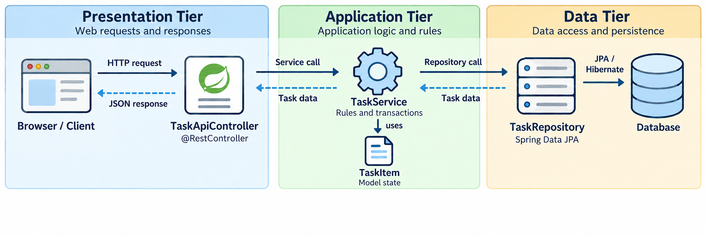

Roadmap
How can a browser use our Task List application?
Understand the HTTP request--response model.
Design a REST API around resources.
See how Spring MVC connects HTTP to Java.
Bind request data and shape HTTP responses.
Validate input and translate errors clearly.
Test the API contract and its application effects.
What Is HTTP?
HTTP stands for Hypertext Transfer Protocol.
It defines how programs exchange requests and responses.
Client: a program that sends a request.
Server: a running program that handles the request.
A browser is one kind of client.
The client and server can run on the same computer.
Same Service, New Input
An HTTP request becomes another way to call the Task List Service.
JavaFX: button click → TaskController → TaskModel → TaskService
Web: HTTP request → TaskApiController ─────────→ TaskServiceReuse the entity and Repository.
Add lookup and filtering methods to the Service.
Keep task rules and transactions in the Service.

A Web Address
A URL is the address that a client requests.
http://localhost:8080/api/tasks| Part | Meaning in this example |
|---|---|
| Protocol: use HTTP. |
| Host: this computer. |
| Port: where our server listens. |
| Path: which data we want. |
Run
WebAppas a Java application first.Enter this URL in the browser's address bar.
GETasks the server to send back data.
Example: web/WebApp.java
Reading an HTTP Request
The first line and headers follow HTTP/1.1 text rules.
GET /api/tasks HTTP/1.1
Host: localhost:8080
First line: read the method, path, and HTTP version.
Headers: each line uses
Name: valuesyntax.Host:
localhost:8080names the host and port.Blank line: ends the headers.
Body: this GET request has none.
Reading an HTTP Response
Read the status first, then the headers and body.
HTTP/1.1 200 OK
Content-Type: application/json
[]First line:
200 OKmeans the request succeeded.Header:
Content-Typesays the body uses JSON.Blank line: separates the headers from the body.
Body:
[]is an empty JSON array.Whole message: HTTP structure with a JSON body.
Example: web/client/HttpGetDemo.java
HTTP Methods
The method describes the requested operation.
| Method | Meaning | Task List example |
|---|---|---|
| Read data | List tasks or read one |
| Submit data | Create a task |
| Create or replace | Not implemented here |
| Apply a partial change | Set the done field |
| Remove a resource | Delete a task |
GET must not request a change to task data.
Sending Data with POST
A request body carries data from the client to the server.
POST /api/tasks HTTP/1.1
Host: localhost:8080
Content-Type: application/json
{"title": "Review REST"}POSTasks this API to create a task.The body supplies the title as JSON.
Content-Typetells the server how to read the body.
Example: web/client/CreateTaskDemo.java
Content-Type and Accept
Headers can describe data formats.
| Header | Meaning |
|---|---|
| This message's body is JSON. |
| The client asks for a JSON response. |
A POST with JSON sets
Content-Type.A GET can send
Acceptwithout a request body.The response has its own
Content-Type.
Status Codes
A status code tells the client how the request ended.
| Code | Meaning |
|---|---|
| The request succeeded. |
| The server created a resource. |
| Success with no response body. |
| The request contains a problem. |
| The requested resource was not found. |
| An unexpected server error occurred. |
2xx: success.4xx: a problem with the request.5xx: a problem on the server.
REST Resources and Representations
A web API is a set of operations other programs can call.
REST: a style for organizing web APIs around resources.
Resource: something the API manages, such as a task.
URL: identifies a resource, such as
/api/tasks/4.Representation: resource data, such as JSON.
HTTP method: describes the requested operation.
Stateful and Stateless Requests
Here, state means information about a client's ongoing interaction.
| Stateful | Stateless |
|---|---|
The server remembers conversation details between requests. |
Each request supplies the context needed to understand it. |
|
1. Select task 4. 2. Show the selected task. |
The request names the task directly. |
REST uses stateless requests.
Task data can still persist in the database.
Resource URLs and HTTP Methods
Use resource names in URLs.
| Avoid | Prefer |
|---|---|
|
|
|
|
|
|
/api/tasksidentifies the collection./api/tasks/4identifies one task.
JSON Represents a Resource
JSON carries the task's data across the network.
{
"id": 4,
"title": "Review REST",
"done": false
}One task is an object inside
{ }.The fields are
id,title, anddone.A list of tasks is an array inside
[ ].
The Task List API
Write the API contract before writing the controller.
| Method | URL | Meaning | Success |
|---|---|---|---|
|
| List tasks |
|
|
| Read one task |
|
|
| Create a task |
|
|
| Set done |
|
|
| Delete a task |
|
Replace {id} with an actual id, such as 4.
Spring Boot Runs an HTTP Server
The application must be running before it can receive HTTP requests.
client → http://localhost:8080 → Spring Boot applicationspring-boot-starter-webadds Spring MVC and an embedded Tomcat server.Tomcat listens for HTTP requests, normally on port
8080.Run
WebAppand leave it running while clients send requests.The server is infrastructure and our controller decides what Java code handles each request.
Where Spring Web Fits

The Spring MVC Request Cycle
Spring MVC sits between HTTP and our application code.
HTTP request
↓
Tomcat accepts the connection
↓
Spring MVC routes the request and reads its input
↓
Controller method → Service
↓
Java return value → HTTP responseRouting: choose a Java method from the HTTP method and path.
Binding: convert request values into Java values.
Response conversion: turn Java results into status, headers, and a body.
What a REST Controller Is Responsible For
A controller is the boundary between HTTP and application logic.
| Controller responsibility | Belongs elsewhere |
|---|---|
Match an HTTP request | Database queries belong in the Repository |
Read and validate client input | Task rules belong in the Service |
Call the Service | Transactions stay in the Service |
Choose the HTTP response | Persistence entities need not be the public API |
The controller should translate between HTTP and the rest of the application, not replace the Service.
Routing: From HTTP to a Java Method
Spring matches the request's HTTP method and path to a controller method.
| HTTP request | Spring mapping |
|---|---|
|
|
|
|
|
|
|
|
@RestControllermarks a class whose return values become response bodies.@RequestMapping("/api/tasks")can define the shared base path once.
Task List Example: GET All Tasks
Now apply the routing model to one endpoint.
@RestController
@RequestMapping("/api/tasks")
public class TaskApiController {
private final TaskService service;
public TaskApiController(TaskService service) {
this.service = service;
}
@GetMapping
public List<TaskItemResponse> findAll() {
return service.findAllTaskItems().stream()
.map(TaskItemResponse::from)
.toList();
}
}GET /api/tasksselectsfindAll().The controller delegates the actual task lookup to
TaskService.Constructor injection supplies the Service dependency.
Choose the Public Response Shape
The data stored in the application and the data exposed by the API are different concerns.
TaskItem entity → TaskItemResponse → JSON
stored data public shape network representationpublic record TaskItemResponse(Long id, String title, boolean done) {
public static TaskItemResponse from(TaskItem item) {
return new TaskItemResponse(
item.getId(), item.getTitle(), item.isDone());
}
}The response type selects the fields clients can see.
Jackson converts the returned response object to JSON.
Where Request Data Lives
Different parts of a request express different kinds of input.
| HTTP location | Typical purpose | Spring binding |
|---|---|---|
Path | Which resource?
|
|
Query | How should the request be filtered?
|
|
Body | What structured data is being sent?
|
|
Spring binding converts those HTTP values into the Java parameter types declared by the controller.
Task List Example: A Path Variable
The path identifies one particular task.
@GetMapping("/{id}")
public TaskItemResponse findOne(@PathVariable Long id) {
return TaskItemResponse.from(service.getTaskItem(id));
}GET /api/tasks/4binds the path value4toid.Spring converts the text
"4"into aLong./api/tasks/abccannot be converted toLong, so the request is invalid.
Task List Example: A Query Parameter
The resource is still the task collection and the query changes which tasks we want.
@GetMapping
public List<TaskItemResponse> findAll(
@RequestParam(required = false) Boolean done) {
List<TaskItem> items = (done == null)
? service.findAllTaskItems()
: service.findTaskItemsByDone(done);
return items.stream().map(TaskItemResponse::from).toList();
}/api/tasksmeans no filter./api/tasks?done=falseasks for unfinished tasks.Booleancan represent true, false, or “not supplied” withnull.
Task List Example: A Request Body
A body carries structured input rather than putting every value in the URL.
public record CreateTaskRequest(String title) { }
@PostMapping
public TaskItemResponse create(
@RequestBody CreateTaskRequest request) {
return TaskItemResponse.from(
service.addTaskItem(request.title()));
}The client sends JSON such as
{"title":"Review REST"}.Jackson creates the
CreateTaskRequestrecord from that JSON.The controller can then work with normal Java values.
An HTTP Response Has Three Main Parts
A controller may need to choose more than the response body.
| Part | What it communicates | Example |
|---|---|---|
Status | How the request ended |
|
Headers | Metadata about the response |
|
Body | Returned data | Task JSON |
Returning a Java object is enough when the default status and headers are appropriate.
ResponseEntitylets the controller choose all three parts explicitly.
Task List Example: 201 Created
A creation response can tell the client where the new resource now lives.
@PostMapping
public ResponseEntity<TaskItemResponse> create(
@RequestBody CreateTaskRequest request) {
TaskItem saved = service.addTaskItem(request.title());
URI location = URI.create("/api/tasks/" + saved.getId());
return ResponseEntity.created(location)
.body(TaskItemResponse.from(saved));
}Status:
201 Created.Header:
Locationcontains the new task's URL.Body: the created task representation.
Parsing, Validation, and Business Rules
Not every request that can be read should be accepted.
| Step | Question | Example failure |
|---|---|---|
Binding / parsing | Can Spring turn the request into Java values? |
|
Validation | Do those values satisfy input constraints? | A title is blank |
Application / Service logic | Can the application complete the requested operation? | A requested task does not exist |
Reject bad input before the Service performs the requested operation.
Task List Example: Validate a Create Request
Bean Validation expresses input constraints on the request type.
public record CreateTaskRequest(
@NotBlank @Size(max = 100) String title) { }
@PostMapping
public ResponseEntity<TaskItemResponse> create(
@Valid @RequestBody CreateTaskRequest request) {
// call the Service only after validation succeeds
}@NotBlankrejects missing, empty, and whitespace-only titles.@Size(max = 100)limits the title length.@Validactivates validation before the method body runs.Add
spring-boot-starter-validationto the project.
Task List Example: PATCH One Field
PATCH applies a partial change to an existing resource.
public record UpdateTaskRequest(@NotNull Boolean done) { }
@PatchMapping("/{id}")
@ResponseStatus(HttpStatus.NO_CONTENT)
public void update(@PathVariable Long id,
@Valid @RequestBody UpdateTaskRequest request) {
service.setDone(id, request.done());
}The path identifies which task to update.
The request body supplies the field being changed.
@Validchecks thatdoneis present.Success returns
204 No Content.
Example: web/api/TaskApiController.java
Task List Example: DELETE One Resource
DELETE follows the same routing pattern, but it does not need a request body.
@DeleteMapping("/{id}")
@ResponseStatus(HttpStatus.NO_CONTENT)
public void delete(@PathVariable Long id) {
service.deleteTaskItem(id);
}The path identifies which task to delete.
No request body is needed because the path already identifies the resource.
The controller delegates the delete operation to the Service.
Success returns
204 No Content.
Example: web/api/TaskApiController.java
Check: Trace One Request
For PATCH /api/tasks/4 with body {"done":true}, put the steps in order.
Spring routes the request to the PATCH controller method.
4binds to the path variable and the JSON body becomesUpdateTaskRequest.Validation checks that
doneis present.The controller calls
TaskService.A successful request returns
204 No Content.
Three Kinds of Failure
The status code should tell the client what kind of problem occurred.
| Kind of failure | Example | Typical status |
|---|---|---|
Invalid request input |
|
|
Requested resource is missing | Task 99 does not exist |
|
Unexpected server failure | An unplanned exception in application code |
|
A useful API makes these outcomes predictable instead of returning the same generic failure for everything.
Keep Application Errors Separate from HTTP
The Service should describe the application problem and the web layer should translate it into HTTP.
Service meaning Web meaning
"task 42 does not exist" → 404 Not Found
TaskNotFoundException {"status":404,"message":"..."}The Service should not need HTTP annotations to report a missing task.
The same Service could be reused by a different interface.
The web layer owns the translation from application exceptions to HTTP responses.
Task List Example: A Missing Task in the Service
The Service gives a missing database row an application-level meaning.
public class TaskNotFoundException extends RuntimeException {
public TaskNotFoundException(Long id) {
super("Task item " + id + " not found");
}
}
@Transactional(readOnly = true)
public TaskItem getTaskItem(Long id) {
return repository.findById(id)
.orElseThrow(() -> new TaskNotFoundException(id));
}findByIdreturns anOptional.orElseThrowconverts the empty case into a meaningful application exception.
Use a Consistent Error Response
Programs need a predictable status. People also benefit from a readable message.
HTTP/1.1 404 Not Found
Content-Type: application/json
{"status":404,"message":"Task item 42 not found"}The HTTP status is the machine-readable outcome.
The JSON body adds structured details about the error.
Using one error shape keeps different failures easier for clients to handle.
Translate Exceptions at the Web Boundary
@RestControllerAdvice centralizes HTTP error mapping across REST controllers.
public record ApiError(int status, String message) { }
@RestControllerAdvice
public class ApiExceptionHandler {
@ExceptionHandler(TaskNotFoundException.class)
@ResponseStatus(HttpStatus.NOT_FOUND)
public ApiError notFound(TaskNotFoundException exception) {
return new ApiError(404, exception.getMessage());
}
}@ExceptionHandlerselects the application exception.@ResponseStatuschooses the HTTP status.The returned
ApiErrorbecomes the JSON body.
Validation Failures Use the Same Boundary
Bad input is a different exception, but the web layer translates it in the same place.
@ExceptionHandler(MethodArgumentNotValidException.class)
@ResponseStatus(HttpStatus.BAD_REQUEST)
public ApiError invalidBody() {
return new ApiError(400, "Invalid task fields");
}A blank POST title or missing PATCH
donefield reaches this handler.Other handlers can map malformed JSON and invalid parameter types to
400.Unexpected failures remain server errors rather than being mislabeled as bad requests.
Example: web/api/ApiExceptionHandler.java
Check: Which Status?
Classify the problem before revealing the answer.
GET /api/tasks?done=maybe→400 Bad RequestGET /api/tasks/99when task 99 does not exist →404 Not FoundDELETE /api/tasks/3succeeds →204 No ContentAn unexpected
NullPointerExceptionoccurs in the Service →500 Internal Server Error
What Should an API Test Verify?
An API test should check behavior at the HTTP boundary, not only a Java method call.
| Question | Example |
|---|---|
Was the request accepted or rejected correctly? | Blank title → |
Is the response correct? | Status, headers, and JSON fields |
Did the application state change correctly? | Invalid input must not create a row |
Good tests connect the HTTP contract to the observable effect of the request.
The Complete Task Workflow
The endpoints should work together as one consistent API.
| Step | Request | Expected result |
|---|---|---|
Create |
|
|
Read |
|
|
Update |
|
|
Filter |
|
|
Delete |
|
|
Read again |
|
|
Example: web/client/TaskApiDemo.java
MockMvc
MockMvc sends requests through the Spring MVC pipeline without opening a listening network port.
@SpringBootTest
@AutoConfigureMockMvc
class ApiErrorTest {
@Autowired MockMvc mvc;
@Autowired TaskRepository repository;
}@SpringBootTestloads the application beans.The real Service and Repository use temporary H2 in this test setup.
MockMvc exercises routing, binding, validation, controllers, and exception handling.
Example: Test an Invalid Request
This test verifies both the HTTP response and the database effect.
repository.deleteAll();
mvc.perform(post("/api/tasks")
.contentType(MediaType.APPLICATION_JSON)
.content("{\"title\":\" \"}"))
.andExpect(status().isBadRequest())
.andExpect(jsonPath("$.status").value(400));
assertEquals(0, repository.count());performsends the request through Spring MVC.andExpectchecks the HTTP response.The final assertion confirms that rejected input did not change the database.
Example: web/ApiErrorTest.java
JSON APIs and Server-Rendered HTML
Spring MVC can route both kinds of requests. The difference is what the controller produces.
| Controller style | Typical result | Client receives |
|---|---|---|
| Java response object | JSON response body |
| View name + model data | Rendered HTML |
Both can call the same Service.
The presentation layer changes but the task logic does not.
Example: A Controller for an HTML View
A regular controller places data in a model and returns the view name.
@GetMapping("/tasks")
public String tasks(Model model) {
model.addAttribute("tasks", service.findAllTaskItems());
return "tasks";
}Modelcarries data to the view template."tasks"identifies the template to render.
Example: Render the Model with Thymeleaf
The template turns model data into HTML on the server.
<h1>Task List</h1>
<ul>
<li th:each="item : ${tasks}">
<span th:text="${item.title}">Task title</span>
</li>
</ul>th:eachrepeats the element for every task.th:textwrites escaped text into the HTML.GET /tasksreturns HTML, whileGET /api/tasksreturns JSON.
Example: web/api/TaskPageController.java
Example: web/src/main/resources/templates/tasks.html
curl on macOS and Linux
curl gives direct control over the HTTP method, headers, and body.
curl -i http://localhost:8080/api/tasks
curl -i -X POST http://localhost:8080/api/tasks \
-H "Content-Type: application/json" \
-d '{"title":"Review REST"}'-ishows the response status and headers.-Xchooses the method,-Hadds a header, and-dsupplies the body.Start
WebAppbefore sending requests.
curl on Windows
The HTTP request is the same. Only the command-shell syntax changes.
curl.exe -i http://localhost:8080/api/tasks
curl.exe -i -X POST http://localhost:8080/api/tasks ^
-H "Content-Type: application/json" ^
-d "{\"title\":\"Review REST\"}"In Command Prompt,
^continues the command on the next line.In PowerShell, use
curl.exeto call the curl program explicitly.
Common Mistakes
Thinking of controllers as the place for task rules instead of as an HTTP boundary.
Using GET to change task data.
Confusing
Content-TypewithAccept.Exposing persistence entities without choosing a public API representation.
Mixing up invalid input (
400) with a missing resource (404).Adding validation annotations but forgetting
@Valid.
Key Takeaways
HTTP defines the request and response contract. REST organizes that contract around resources.
Spring MVC routes requests, binds HTTP input to Java values, and converts Java results into HTTP responses.
Controllers translate between HTTP and the Service rather than owning business logic.
Path, query, and body values have different roles and map to different Spring bindings.
Validation rejects bad input before business logic runs.
Error handling translates application problems into consistent HTTP outcomes.
API tests should verify both the HTTP contract and the resulting application state.